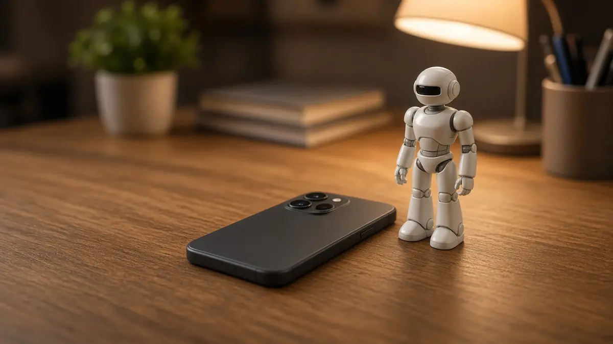

Tesla
Why a report of December Tesla Optimus reservations is trending, and why it is disputed
Short answer: On 30 October, The San Francisco Standard reported that Tesla planned to open reservations for its Optimus humanoid in early December. Hours later, Tesla CEO Elon Musk replied "No" to a post on X asking whether Optimus ordering was coming in December, which the Standard said appeared to deny the plan. Tesla has not published an ordering or reservation page, so the timing remains unclear.
According to the Standard, the claim came from Modar Alaoui, an investor at ALM Ventures who runs The Humanoids Summit, which takes place in San Mateo on 1 and 2 December. Alaoui told the paper that Tesla had told him reservations would open with his event or in the days after it, that most robots would go to companies with a small number for consumers, and that he expected the first shipments to include the Optimus V3. The Standard put the expected price at more than $20,000, said Tesla did not respond to requests for comment, said it was unclear how much money, if any, would be needed to reserve one, and said the robots would likely not ship for another year.

The Standard's reporter, Rachyl Jones, posted the news on X at 19:05 UTC on 30 October. Two minutes later, tech commentator Robert Scoble quoted it, asking whether ordering was coming in December and jokingly asking the @Bot account to watch for it and order him one. Musk answered that post at 22:08 UTC with a single word, "No".
TeslaNorth noted that Musk was replying to a post that mixed the question with a joke, so it is not fully clear which part he was answering. The Standard's report also recalled Musk's comments on Tesla's latest earnings call, where he said Optimus still had issues with its AI, electromechanical design and runtime that he expected to be solved around the end of next year, which is when he said to expect deliveries to companies outside Tesla. Our earlier story on Tesla's late 2027 delivery target has more background.
Sources
- Tesla is set to open reservations for Optimus robot later this year, says industry expert (The San Francisco Standard, 30 Oct 2026, updated the same day)
- Rachyl Jones on X: Tesla opening Optimus reservations in early December, per a source (30 Oct 2026)
- Robert Scoble on X: Optimus ordering coming in December? (30 Oct 2026)
- Elon Musk on X: reply "No" (30 Oct 2026)
- Elon Musk Shoots Down Report That Optimus Orders Open in December (TeslaNorth, 30 Oct 2026)
- X trending story on Musk's reply to the Optimus reservations report (accessed 31 Oct 2026)